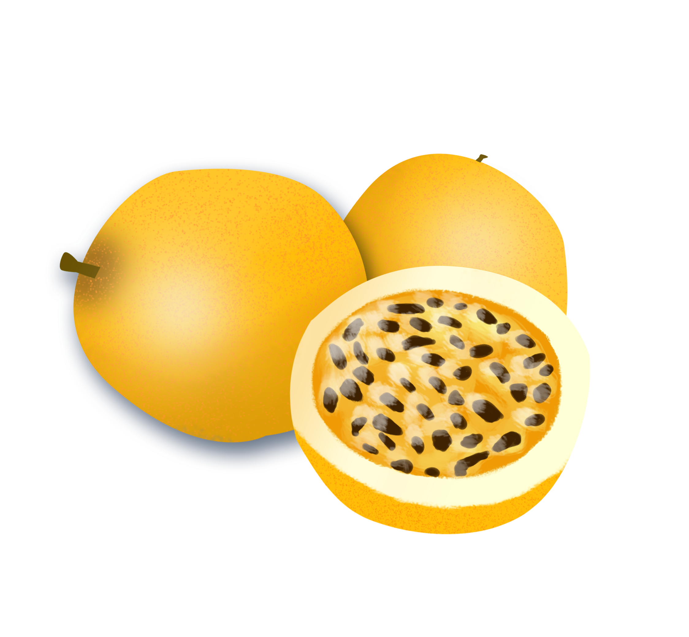

| NOM |
PRÉNOM |
RÔLE |
RENCONTRÉ.E |
| Cluniat |
Philippine |
Pilote de Zozo-mobile |
|
| Darins |
Anne |
Gestion de fer dans un gant de velours |
 |
| De Chateaubourg |
Julien |
Agilité et technique au sirop d'érable |
|
| Delalić |
Lena |
Padawan |
|
| Duron |
Johann |
Chef de projet multi expérimenté & champion du monde de la bonne humeur ! |
|
| Hautenne |
Christophe |
Directeur technique turbocompressé |
|
| Laschkar |
Alexia |
Championne SEO catégorie Data |
I don't think so |
| Pierrard |
Adrien |
Panda Zen raffolant de Symfony |
I think so |
| Pierrard |
Adrien |
Panda Zen raffolant de Symfony |
I think so |
| Pierrard |
Adrien |
Panda Zen raffolant de Symfony |
I think so |
| Pierrard |
Adrien |
Panda Zen raffolant de Symfony |
I think so |
| Pierrard |
Adrien |
Panda Zen raffolant de Symfony |
I think so |
| Pierrard |
Adrien |
Panda Zen raffolant de Symfony |
I think so |